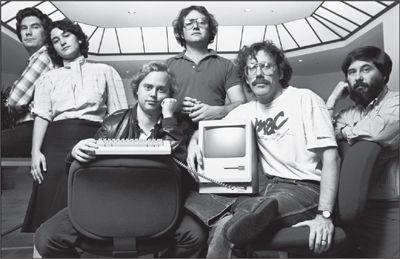

The original Mac team in 1984: George Crow, Joanna Hoffman, Burrell Smith, Andy Hertzfeld, Bill Atkinson, and Jerry Manock
When Andy Hertzfeld joined the Macintosh team, he got a briefing from Bud Tribble, the other software designer, about the huge amount of work that still needed to be done. Jobs wanted it finished by January 1982, less than a year away. “That’s crazy,” Hertzfeld said. “There’s no way.” Tribble said that Jobs would not accept any contrary facts. “The best way to describe the situation is a term from Star Trek,” Tribble explained. “Steve has a reality distortion field.” When Hertzfeld looked puzzled, Tribble elaborated. “In his presence, reality is malleable. He can convince anyone of practically anything. It wears off when he’s not around, but it makes it hard to have realistic schedules.”
安迪·赫茨菲尔德加入Mac团队后，另一名软件设计师巴德·特里布尔给他介绍了项目的基本情况，让他知道了还有大量工作尚未完成。乔布斯希望项目能在1982年1月之前完工，也就是说只有不到一年时间。“这太疯狂了，”赫茨菲尔德指出，“不可能的。”特里布尔说，乔布斯是不能接受违背自己意愿的事情发生的。“能最好地形容这种情况的就是《星际迷航》里的一个术语”，特里布尔解释道，“史蒂夫拥有现实扭曲力场。”赫茨菲尔德有些疑惑，特里布尔便进一步解释道：“有他在的时候，现实都是可塑的。他能让任何人相信几乎任何事情。等他不在的时候，这种力场就会逐渐消失，但这种力场让我们很难作出符合实际的计划。”
Tribble recalled that he adopted the phrase from the “Menagerie” episodes of Star Trek, “in which the aliens create their own new world through sheer mental force.” He meant the phrase to be a compliment as well as a caution: “It was dangerous to get caught in Steve’s distortion field, but it was what led him to actually be able to change reality.”
特里布尔回忆说，自己是从《星际迷航》中著名的一集——“宇宙动物园”中学来的这个短语，“在那一集中，外星人通过极致的精神力量建造了新世界。”他说他使用这个短语既是一种称赞，也是一种警示。“陷入史蒂夫的扭曲力场中是一件很危险的事情，但也正是这种力场让他可以真正地改变现实。”
At first Hertzfeld thought that Tribble was exaggerating, but after two weeks of working with Jobs, he became a keen observer of the phenomenon. “The reality distortion field was a confounding mélange of a charismatic rhetorical style, indomitable will, and eagerness to bend any fact to fit the purpose at hand,” he said.
起初，赫茨菲尔德认为特里布尔一定是夸张了。但在对乔布斯进行了两个星期的观察后，他有了切身感受。“现实扭曲力场是几种因素的混合物，其中包含了极富魅力的措辞风格、不屈的意志和让现实屈从于自己意图的热切渴望，”他说，“如果他的一个论点没能说服别人，他会娴熟地切换到另一个论点。有时候，他会突然把你的观点占为己有，甚至都不承认自己曾有过不同的想法，这会让你猝不及防。”
There was little that could shield you from the force, Hertzfeld discovered. “Amazingly, the reality distortion field seemed to be effective even if you were acutely aware of it. We would often discuss potential techniques for grounding it, but after a while most of us gave up, accepting it as a force of nature.” After Jobs decreed that the sodas in the office refrigerator be replaced by Odwalla organic orange and carrot juices, someone on the team had T-shirts made. “Reality Distortion Field,” they said on the front, and on the back, “It’s in the juice!”
赫茨菲尔德还发现，没有人可以避开这股力量的影响。“让人惊奇的是，即使你敏锐地意识到了现实扭曲力场，它还是可以在你身上产生作用，”他说，“我们经常讨论有没有方法可以屏蔽这个力场，但一段时间之后，大多数人都放弃了，只能认为它是一种自然力量。”有一次乔布斯宣布，办公室冰箱里的苏打水都会被替换成奥德瓦拉（Odwalla）牌的有机橙汁和胡萝卜汁，之后团队里就有人制作了一批T恤，前面写着“现实扭曲力场”背后写着“它藏在果汁里！”
To some people, calling it a reality distortion field was just a clever way to say that Jobs tended to lie. But it was in fact a more complex form of dissembling. He would assert something—be it a fact about world history or a recounting of who suggested an idea at a meeting—without even considering the truth. It came from willfully defying reality, not only to others but to himself. “He can deceive himself,” said Bill Atkinson. “It allowed him to con people into believing his vision, because he has personally embraced and internalized it.”
在某种程度上，称之为现实扭曲力场只是换了种好听的说法来描述乔布斯喜欢说谎的特性。但事实上，它是一种更复杂的掩饰行为。乔布斯会断言一些事情——可能是世界历史上的一个事件，或者是叙述一场会议上某人提出了一个观点——而完全不考虑事实是什么。这源自他对现实的有意蔑视，不光是对别人，也对他自己。“他可以欺骗他自己比尔·阿特金森说，“这就让他可以说服别人相信他的观点，因为他自己已经接受并吸收了这个观点。”
A lot of people distort reality, of course. When Jobs did so, it was often a tactic for accomplishing something. Wozniak, who was as congenitally honest as Jobs was tactical, marveled at how effective it could be. “His reality distortion is when he has an illogical vision of the future, such as telling me that I could design the Breakout game in just a few days. You realize that it can’t be true, but he somehow makes it true.”
当然，很多人都会扭曲现实。当乔布斯这么做的时候，通常都是一种策略，为了实现某个目的。天性诚实的沃兹尼亚克就惊叹于这种力量的效果。“当他对于未来有一些不合常理的想法时，比如说告诉我，我能只用几天时间就设计出‘打砖块’游戏的时候，他的现实扭曲力场就会起作用。你意识到那是不现实的，但他就是有办法让它变为现实。”
When members of the Mac team got ensnared in his reality distortion field, they were almost hypnotized. “He reminded me of Rasputin,” said Debi Coleman. “He laser-beamed in on you and didn’t blink. It didn’t matter if he was serving purple Kool-Aid. You drank it.” But like Wozniak, she believed that the reality distortion field was empowering: It enabled Jobs to inspire his team to change the course of computer history with a fraction of the resources of Xerox or IBM. “It was a self-fulfilling distortion,” she claimed. “You did the impossible, because you didn’t realize it was impossible.”
当Mac团队的成员们陷入他的现实扭曲力场时，他们就好像被催眠了一样。“他让我想起了拉斯普京①，”黛比·科尔曼（DebiColeman）说，“他会死死地盯着你，眼睛一眨都不眨。哪怕他端给你一杯毒药，你也会乖乖地喝下去。”但是，和沃兹尼亚克一样，她也认为现实扭曲力场是充满力量的：它让乔布斯激励自己的团队，在掌握的资源远不及施乐及IBM的情况下，改变了计算机产业的进程。“那是一种自我实现的扭曲，”她说，“你完成了不可能完成的任务，因为你并没有意识到它是不可能完成的。”
At the root of the reality distortion was Jobs’s belief that the rules didn’t apply to him. He had some evidence for this; in his childhood, he had often been able to bend reality to his desires. Rebelliousness and willfulness were ingrained in his character. He had the sense that he was special, a chosen one, an enlightened one. “He thinks there are a few people who are special—people like Einstein and Gandhi and the gurus he met in India—and he’s one of them,” said Hertzfeld. “He told Chrisann this. Once he even hinted to me that he was enlightened. It’s almost like Nietzsche.” Jobs never studied Nietzsche, but the philosopher’s concept of the will to power and the special nature of the überman came naturally to him. As Nietzsche wrote in Thus Spoke Zarathustra, “The spirit now wills his own will, and he who had been lost to the world now conquers the world.” If reality did not comport with his will, he would ignore it, as he had done with the birth of his daughter and would do years later, when first diagnosed with cancer. Even in small everyday rebellions, such as not putting a license plate on his car and parking it in handicapped spaces, he acted as if he were not subject to the strictures around him.
现实扭曲力场的根源在于乔布斯内心深处不可动摇的信念：世界上的规则都不适用于他。这在他身上是有迹可循的：小时候，他就经常可以让现实屈服于自己的欲望。但他认为自己可以无视规则的信念还有更深层次的原因，就是深深植根于他性格中的叛逆与固执。他觉得自己很特别：他是被上天选中并受到启示的。“他认为有一些人是很特别的——比如他自己、爱因斯坦、甘地以及他在印度遇到的那些导师——而他就是其中之一，”赫茨菲尔德说，“他跟克里斯安讲过这些。有一次他甚至暗示我，他是受到过上天启示的。这些话就像是从尼采口中说出来的。”乔布斯从没有研究过尼采，但他的天性与尼采的一些思想不谋而合：对权力的渴望，以及“超人”（Uberman）的特殊本性。尼采在《查拉图斯特拉如是说》中写道：“精神现在拥有了自己的意志；被世界所驱逐的人，终于赢得了自己的世界！”如果现实与乔布斯的意愿不一致的话，他就会忽略现实，他的女儿丽萨出生时他就是这么做的；多年以后，当他第一次被诊断患上了癌症时，他也是这么做的。即使平时一些小小的叛逆行为，比如汽车不装牌照，或是将车停在残疾人停车位上，他也表现得好像完全不受规则和现实的约束。
Another key aspect of Jobs’s worldview was his binary way of categorizing things. People were either “enlightened” or “an asshole.” Their work was either “the best” or “totally shitty.” Bill Atkinson, the Mac designer who fell on the good side of these dichotomies, described what it was like:
乔布斯的世界观的另一个重要方面，就是他对人或物进行分类时，非黑即白的思维方式。人要么就是“受到过启示的”，要么就是“饭桶”；人们的工作成果要么是“最棒的”，要么就是“完全的垃圾”。Mac的设计师比尔·阿特金森在这样的二分法中获得的总是积极的评价，他有如下描述：
It was difficult working under Steve, because there was a great polarity between gods and shitheads. If you were a god, you were up on a pedestal and could do no wrong. Those of us who were considered to be gods, as I was, knew that we were actually mortal and made bad engineering decisions and farted like any person, so we were always afraid that we would get knocked off our pedestal. The ones who were shitheads, who were brilliant engineers working very hard, felt there was no way they could get appreciated and rise above their status.
在史蒂夫手下工作太难了，因为“神”与“白痴”之间的两极分化太严重了。如果你是神，你就是高高在上，存在于神坛上的，绝不能犯错误。我们当中被认为是神的那些人，比如说我，都知道自己实际上也是凡人，我们也会作出糟糕的工程决定，也会像任何人一样吃饭放屁，所以我们总是害怕会被赶下神坛。而那些被认为是白痴的，他们其实也是辛勤工作的杰出工程师，但他们就会觉得自己永远都得不到赏识，永远无法摆脱白痴的身份。
But these categories were not immutable, for Jobs could rapidly reverse himself. When briefing Hertzfeld about the reality distortion field, Tribble specifically warned him about Jobs’s tendency to resemble high-voltage alternating current. “Just because he tells you that something is awful or great, it doesn’t necessarily mean he’ll feel that way tomorrow,” Tribble explained. “If you tell him a new idea, he’ll usually tell you that he thinks it’s stupid. But then, if he actually likes it, exactly one week later, he’ll come back to you and propose your idea to you, as if he thought of it.”
但这样的分类并不是永恒不变的。尤其是当乔布斯的看法是关于想法而不是关于人的时候，他有时会很快推翻自己先前的结论。特里布尔在向赫茨菲尔德介绍现实扭曲力场时，特别叮嘱他：乔布斯就像高压交流电一样善变。“他告诉你某样东西是糟糕的或者绝妙的，并不代表他明天还会这么想，”特里布尔解释说，“如果你告诉他一个新想法，他通常会告诉你他认为这个想法很愚蠢。但之后，如果他真的喜欢上了这个想法，一个星期之后，他会找到你，然后把你的想法再提出来，就好像是他自己想出来的一样。”
The audacity of this pirouette technique would have dazzled Diaghilev. “If one line of argument failed to persuade, he would deftly switch to another,” Hertzfeld said. “Sometimes, he would throw you off balance by suddenly adopting your position as his own, without acknowledging that he ever thought differently.” That happened repeatedly to Bruce Horn, the programmer who, with Tesler, had been lured from Xerox PARC. “One week I’d tell him about an idea that I had, and he would say it was crazy,” recalled Horn. “The next week, he’d come and say, ‘Hey I have this great idea’—and it would be my idea! You’d call him on it and say, ‘Steve, I told you that a week ago,’ and he’d say, ‘Yeah, yeah, yeah’ and just move right along.”
这种脚尖旋转技巧的大胆程度，即便是迪亚吉列夫②看了，也会眼花缭乱。布鲁斯·霍恩是和#斯勒一起从施乐PARC跳槽到苹果的程序贯，他就亲历了多次这样的事情。“某一天，我会跟他提一个自己的想法，他会说那太疯狂了，”霍恩说，“到下一周，他会跑过来跟我说：‘嘿！我有个很棒的主意’——而那正是我的主意！我跟他说：‘史蒂夫，一个星期之前我就跟你说过这个了。’他就会说：‘知道了知道了。’然后继续讲下去。”
It was as if Jobs’s brain circuits were missing a device that would modulate the extreme spikes of impulsive opinions that popped into his mind. So in dealing with him, the Mac team adopted an audio concept called a “low pass filter.” In processing his input, they learned to reduce the amplitude of his high-frequency signals. That served to smooth out the data set and provide a less jittery moving average of his evolving attitudes. “After a few cycles of him taking alternating extreme positions,” said Hertzfeld, “we would learn to low pass filter his signals and not react to the extremes.”
乔布斯的大脑电路中似乎缺少了一个装置，这个装置可以调节在他脑中闪现的冲动观点的峰值。于是，在跟他打交道的过程中，Mac团队运用了音频上的一个概念——低通滤波器。在乔布斯向大家输入11点时，他们学会了将他的高频信号的振幅减小。如此一来就可以平滑地输出数据集，并且为他不断变化的态度提供一个让人不那么紧张的平均值。“几个周期后，”赫茨菲尔德说，“我们就学会了怎样低通过滤他的信号，以及如何不对他的极端态度作出反应。”
Was Jobs’s unfiltered behavior caused by a lack of emotional sensitivity? No. Almost the opposite. He was very emotionally attuned, able to read people and know their psychological strengths and vulnerabilities. He could stun an unsuspecting victim with an emotional towel-snap, perfectly aimed. He intuitively knew when someone was faking it or truly knew something. This made him masterful at cajoling, stroking, persuading, flattering, and intimidating people. “He had the uncanny capacity to know exactly what your weak point is, know what will make you feel small, to make you cringe,” Joanna Hoffman said. “It’s a common trait in people who are charismatic and know how to manipulate people. Knowing that he can crush you makes you feel weakened and eager for his approval, so then he can elevate you and put you on a pedestal and own you.”
乔布斯做出这些极端的行为是因为他缺乏情感上的敏感性吗？不，恰恰相反。他的情感理解能力是超强的。他有着不可思议的阅人能力，可以看出他人心理上的优势、弱点以及不安全感。他能在别人毫无防备的情况下，直击对方心灵最深处。他凭直觉就能看出一个人是在说谎还是真的知道一些事情。这让他成为了哄骟、安抚、劝说、奉承、威胁他人的大师。“他就是有这种神奇的力量，能准确地知道你的弱点是什么，怎样能让你觉得自己很渺小，怎样能让你畏缩，”霍夫曼说，“这是那些极富魅力、知道如何操纵别人的入身上的共同特质。你知道他能摧毁你，这就让你感觉自己变弱了，你渴望得到他的认可，然后他就可以把你推上神坛并彻底拥有你。”
Ann Bowers became an expert at dealing with Jobs’s perfectionism, petulance, and prickliness. She had been the human resources director at Intel, but had stepped aside after she married its cofounder Bob Noyce. She joined Apple in 1980 and served as a calming mother figure who would step in after one of Jobs’s tantrums. She would go to his office, shut the door, and gently lecture him. “I know, I know,” he would say. “Well, then, please stop doing it,” she would insist. Bowers recalled, “He would be good for a while, and then a week or so later I would get a call again.” She realized that he could barely contain himself. “He had these huge expectations, and if people didn’t deliver, he couldn’t stand it. He couldn’t control himself. I could understand why Steve would get upset, and he was usually right, but it had a hurtful effect. It created a fear factor. He was self-aware, but that didn’t always modify his behavior.”
Jobs became close to Bowers and her husband, and he would drop in at their Los Gatos Hills home unannounced. She would hear his motorcycle in the distance and say, “I guess we have Steve for dinner again.” For a while she and Noyce were like a surrogate family. “He was so bright and also so needy. He needed a grown-up, a father figure, which Bob became, and I became like a mother figure.”
There were some upsides to Jobs’s demanding and wounding behavior. People who were not crushed ended up being stronger. They did better work, out of both fear and an eagerness to please. “His behavior can be emotionally draining, but if you survive, it works,” Hoffman said. You could also push back—sometimes—and not only survive but thrive. That didn’t always work; Raskin tried it, succeeded for a while, and then was destroyed. But if you were calmly confident, if Jobs sized you up and decided that you knew what you were doing, he would respect you. In both his personal and his professional life over the years, his inner circle tended to include many more strong people than toadies.
这样也有一些好处。那些没有被摧毁的人都变得更为强大。他们能更好地完成工作，既是出于畏惧，又是渴望取悦他，也是意识到自己身上背负着这样的期待。“他的行为可以让你在情感上饱受折磨，但如果你能挺过去，它就能起到积极的作用。”霍夫曼说。有时候，你可以对抗乔布斯的力量，这样的话不但可以幸存下来，还能茁壮成长。但这并不总能成功，拉斯金尝试过，短时间内他成功了，但之后还是被摧毁了。但如果你很自信而且你是正确的，如果乔布斯审视你一番后认为你清楚自己在干什么，他就会很尊重你。多年来，无论是在他的私人生活还是职业生涯中，他的核心圈子里集中的都是真正的强者，而不是馅媚者。
The Mac team knew that. Every year, beginning in 1981, it gave out an award to the person who did the best job of standing up to him. The award was partly a joke, but also partly real, and Jobs knew about it and liked it. Joanna Hoffman won the first year. From an Eastern European refugee family, she had a strong temper and will. One day, for example, she discovered that Jobs had changed her marketing projections in a way she found totally reality-distorting. Furious, she marched to his office. “As I’m climbing the stairs, I told his assistant I am going to take a knife and stab it into his heart,” she recounted. Al Eisenstat, the corporate counsel, came running out to restrain her. “But Steve heard me out and backed down.”
Mac团队也深知这一点。从1981年开始，他们每年都会将一个奖项颁发给最能勇敢面对乔布斯的人。这个奖在一定程度上是个玩笑，但也有认真的意思，乔布斯知道这个奖并且还很喜欢它。第一年，该奖被授予了乔安娜·霍夫曼。她来自一个东欧难民家庭，脾气和意志都很强硬。比如，有一天，她发现乔布斯以一种完全扭曲事实的方式更改了她的市场规划。她愤怒地冲向他的办公室。她回忆说；“在我上楼梯的时候，我就告诉他的助理，我要拿把刀插进他的心脏。”公司的法律顾问阿尔·艾森施塔特（AlEisemtat）跑过来制止了她。“但史蒂夫听我说完后作出了让步。”
Hoffman won the award again in 1982. “I remember being envious of Joanna, because she would stand up to Steve and I didn’t have the nerve yet,” said Debi Coleman, who joined the Mac team that year. “Then, in 1983, I got the award. I had learned you had to stand up for what you believe, which Steve respected. I started getting promoted by him after that.” Eventually she rose to become head of manufacturing.
霍夫曼在1982年再一次赢得了这个奖项。“我记得我当时很羡慕乔安娜，因为她敢于面对史蒂夫，而我却没那个胆子。”那一年加入Mac团队的黛比·科尔曼说，“然后，1983年，我赢得了那个奖项。我认识到，我必须坚守自己的信念，乔布斯也很尊重这种做法。从那以后我开始得到晋升。”最终，她成为了制造部门的负责人。
One day Jobs barged into the cubicle of one of Atkinson’s engineers and uttered his usual “This is shit.” As Atkinson recalled, “The guy said, ‘No it’s not, it’s actually the best way,’ and he explained to Steve the engineering trade-offs he’d made.” Jobs backed down. Atkinson taught his team to put Jobs’s words through a translator. “We learned to interpret ‘This is shit’ to actually be a question that means, ‘Tell me why this is the best way to do it.’” But the story had a coda, which Atkinson also found instructive. Eventually the engineer found an even better way to perform the function that Jobs had criticized. “He did it better because Steve had challenged him,” said Atkinson, “which shows you can push back on him but should also listen, for he’s usually right.”
一天，乔布斯冲进了阿特金森手下一名工程师的小隔间，说出了自己常说的那句话：“这是狗屎。”阿特金森回忆说：“那个家伙回答：‘不，这其实是最好的方法。’然后他向史蒂夫解释了自己在工程方面作的一些杈衡。”乔布斯败下阵来。阿特金森告诉他的团队，乔布斯的话不能照字面理解，需要转化一下。“我们把‘这是狗屎’解读为一个问句，它真实的意思是‘告诉我，这为什么是最好的方法？’”但这个故事的结尾让阿特金森也觉得很有教育意义。最终，那名工程师找到了一个更好的方法，来实现乔布斯之前指责的那个功能。“正因为史蒂夫挑战了他，他才找到了更好的方法。”阿特金森说，“这意味着，你可以反驳他的意见，但也应该认真听他说的话，因为他通常都是正确的。”
Jobs’s prickly behavior was partly driven by his perfectionism and his impatience with those who made compromises in order to get a product out on time and on budget. “He could not make trade-offs well,” said Atkinson. “If someone didn’t care to make their product perfect, they were a bozo.” At the West Coast Computer Faire in April 1981, for example, Adam Osborne released the first truly portable personal computer. It was not great—it had a five-inch screen and not much memory—but it worked well enough. As Osborne famously declared, “Adequacy is sufficient. All else is superfluous.” Jobs found that approach to be morally appalling, and he spent days making fun of Osborne. “This guy just doesn’t get it,” Jobs repeatedly railed as he wandered the Apple corridors. “He’s not making art, he’s making shit.”
乔布斯这种带刺的行为，一定程度上是受到了两种因素的驱使：一是他的完美主义，二就是，他无法容忍那些为了让产品及时面世或为了压缩成本而作出合理（甚至明智）妥协的人。“他不会在产品上作出妥协，”阿特金森说，“他是个控制欲极强的完美主义者。如果哪个人不愿意把产品做到完美，那他就是笨蛋。”举例来说，1981年的西海岸计算机展销会上，亚当·奥斯本（AdamOsbome）发布了第一款真正意义上的便携式个人电脑。它并不出众——屏幕只有5英寸、内存也不大——但运行状况尚可。正如奥斯本那旬著名的宣言：“够用就好，多出来的功能都是浪费。”乔布斯认为这整个想法都是可怕的，好几天的时间里他都在嘲笑奥斯本。“这家伙就是不明白，”他走在苹果公司的走廊里还反复骂道，“他不是在创造艺术品，而是在制造垃圾。”
One day Jobs came into the cubicle of Larry Kenyon, an engineer who was working on the Macintosh operating system, and complained that it was taking too long to boot up. Kenyon started to explain, but Jobs cut him off. “If it could save a person’s life, would you find a way to shave ten seconds off the boot time?” he asked. Kenyon allowed that he probably could. Jobs went to a whiteboard and showed that if there were five million people using the Mac, and it took ten seconds extra to turn it on every day, that added up to three hundred million or so hours per year that people would save, which was the equivalent of at least one hundred lifetimes saved per year. “Larry was suitably impressed, and a few weeks later he came back and it booted up twenty-eight seconds faster,” Atkinson recalled. “Steve had a way of motivating by looking at the bigger picture.”
一天，乔布斯走进了拉里·凯尼恩（LarryKenyon）的办公隔间，他是负责麦金塔电脑操作系统的工程师，乔布斯抱怨说开机启动时间太长了。凯尼恩开始解释，但乔布斯打断了他。他问道：“如果能救人一命的话，你愿意想办法让启动时间缩短10秒钟吗？”凯尼恩说也许可以。乔布斯于是走到一块白板前开始演示，如果有500万人使用Mac，而每天开机都要多用10秒钟，那加起来每年就要浪费大约3亿分钟，而3亿分钟相当于至少100个人的终身寿命。“这番话让拉里十分震惊，几周过后，乔布斯再来看的时候，启动时间缩短了28秒，”阿特金森回忆说，“史蒂夫能看到宏观层面，从而激励别人工作。”
The result was that the Macintosh team came to share Jobs’s passion for making a great product, not just a profitable one. “Jobs thought of himself as an artist, and he encouraged the design team to think of ourselves that way too,” said Hertzfeld. “The goal was never to beat the competition, or to make a lot of money. It was to do the greatest thing possible, or even a little greater.” He once took the team to see an exhibit of Tiffany glass at the Metropolitan Museum in Manhattan because he believed they could learn from Louis Tiffany’s example of creating great art that could be mass-produced. Recalled Bud Tribble, “We said to ourselves, ‘Hey, if we’re going to make things in our lives, we might as well make them beautiful.’”
受到乔布斯的影响，麦金塔团队也充满激情地要制造一台完美的产品，而不仅仅是可以赚钱的产品。“乔布斯认为自己是艺术家，他鼓励设计团队的人把自己也当成艺术家，”赫茨菲尔德说，“我们的目标从来都不是打败竞争对手，或者是狠赚一笔，而是做出最好的产品，甚至比最好的还要好一点儿。”乔布斯还带着团队去曼哈顿的大都会博物馆参观蒂芙尼的玻璃制品展览，因为他觉得，大家可以从路易斯·蒂芙尼（LouisTiffany）创造出可以量产的伟大艺术品这个例子中获益匪浅。“我们谈论道，这些玻璃制品并不都是路易斯·蒂芙尼亲手制作的，但他成功地将自己的设计传授给了别人巴德·特里布尔回忆道，“我们对自己说，‘既然我们要制造产品，何不也把它做得漂亮点儿呢？’”
Was all of his stormy and abusive behavior necessary? Probably not, nor was it justified. There were other ways to have motivated his team. Even though the Macintosh would turn out to be great, it was way behind schedule and way over budget because of Jobs’s impetuous interventions. There was also a cost in brutalized human feelings, which caused much of the team to burn out. “Steve’s contributions could have been made without so many stories about him terrorizing folks,” Wozniak said. “I like being more patient and not having so many conflicts. I think a company can be a good family. If the Macintosh project had been run my way, things probably would have been a mess. But I think if it had been a mix of both our styles, it would have been better than just the way Steve did it.”
他所有这些暴躁、恶劣的行为都是必要的吗？也许不是，而且这些行为也并不都是合乎情理的。还有其他方式可以激励他的团队。尽管麦金塔电脑后来被证明是一件伟大的产品，但由于乔布斯的鲁莽干预，它的生产进度已远远落后，预算也严重超支。受到残酷对待的员工在感情上也很受伤，大多数人都已心力交瘁。“史蒂夫用不着让员工如此恐惧也可以为团队作出他的贡献，”沃兹尼亚克说，“我喜欢更加耐心一点儿，不要有那么多矛盾冲突。我觉得一家公司可以像一个和睦的家庭一样。如果麦金塔项目是以我的方式运行的话，事情可能会一团糟。但我想，如果能把我们两人的风格中和一下的话，结果会比只用史蒂夫的方式要好一点儿。”
But even though Jobs’s style could be demoralizing, it could also be oddly inspiring. It infused Apple employees with an abiding passion to create groundbreaking products and a belief that they could accomplish what seemed impossible. They had T-shirts made that read “90 hours a week and loving it!” Out of a fear of Jobs mixed with an incredibly strong urge to impress him, they exceeded their own expectations.
“I’ve learned over the years that when you have really good people you don’t have to baby them,” Jobs later explained. “By expecting them to do great things, you can get them to do great things. The original Mac team taught me that A-plus players like to work together, and they don’t like it if you tolerate B work. Ask any member of that Mac team. They will tell you it was worth the pain.”
然而，乔布斯的行事风格也有其优势。它给苹果的员工们注入了持久的热情，让他们去创造革命性的产品，也让他们相信，自己可以完成看上去不可能完成的事情。他们制作了T恤，上面写着“我爱每周工作90个小时”。出于对乔布斯的畏惧以及想取悦他的强烈愿望，他们的工作都超出了自己的预想。虽然乔布斯禁止团队为了降低Mac成本或是赶进度而在产品上作出让步，但这也同时阻止了一些看似合理实则粗劣的折中方案。
“多年以来，我认识到，当你拥有真正优秀的人才时，你不必对他们太纵容，”乔布斯后来解释说，“你期待他们做出好成绩，你就能让他们做出好成绩。最初的Mac团队让我知道，最顶级的人才喜欢一起工作，而且他们是不能容忍平庸的作品的。你到那个Mac团队里随便找个人问问。他们会告诉你，那些痛苦都是值得的。”
Most of them agree. “He would shout at a meeting, ‘You asshole, you never do anything right,’” Debi Coleman recalled. “It was like an hourly occurrence. Yet I consider myself the absolute luckiest person in the world to have worked with him.”
大多数人确实这么认为。“他会在开会的时候大喊：‘你这个蠢货，你从来就没有把事情做对过。’”黛比·科尔曼回忆道，“类似的事情好像每个小时都会发生。但我还是认为，能够和他并肩作战，我真的是世界上最幸运的人了。”——
注释：
①俄国尼古拉二世时的神秘主义者、俄国沙皇及皇后的宠臣，有高超的催眠术。
②俄国艺术评论家，创办了著名的俄国芭蕾舞团。